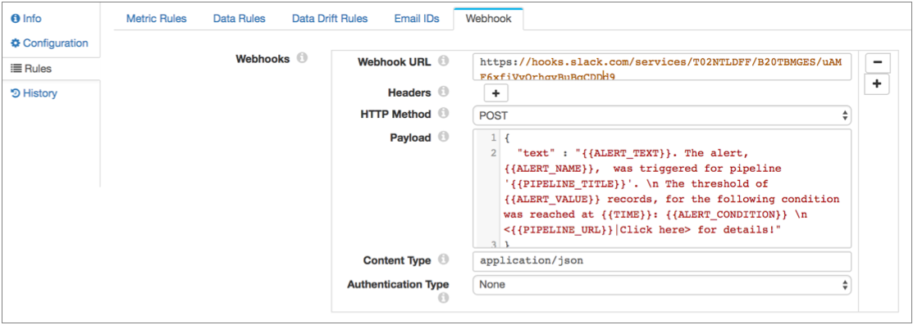
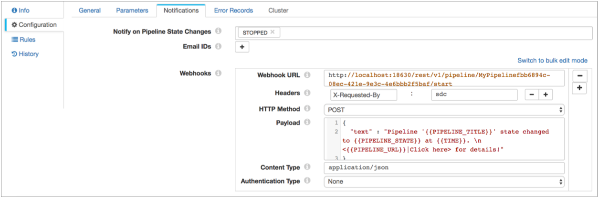

You can configure a pipeline use webhooks. A webhook is a user-defined HTTP callback - an HTTP request that the pipeline sends automatically when certain actions occur. You can use webhooks to automatically trigger external tasks based on an HTTP request. Tasks can be as simple as sending a message through an application API or as powerful as passing commands to the Data Collector command line interface.
| Trigger | Description | Configuration Location |
|---|---|---|
| Alert | The pipeline sends all alert webhooks each time an alert is
triggered. For example, if your text message application has a webhook API, you can have the pipeline send texts when alerts are triggered. For details on how to configure an alert webhook, see Configuring an Alert Webhook. |
Pipeline Rules tab > Webhook tab |
| State notification | The pipeline sends all state notification webhooks when the
pipeline transitions to the selected pipeline states. For example, you can send an HTTP request to the Data Collector REST API to start a different pipeline when the current pipeline transitions to a Finished state. For details on how to configure a state notification webhook, see the Notifications properties in Configuring a Pipeline. |
Pipeline Configuration tab > Notifications tab |
The flexibility of webhooks enables you to automatically trigger a wide range of tasks, depending on the ability of external systems to support webhooks or process HTTP requests.
When you configure a webhook, you specify the URL to send the request and the HTTP method to use. Some HTTP methods allow you to include a request body or payload. In the payload, you can use parameters to include information about the cause of the trigger, such as the text of the alert or the latest pipeline state. You can also include request headers, content type, authentication type, username and password as needed.
You can include a request body or payload for PUT, POST, and DELETE request webhooks. Depending on the receiving system, the payload might not be used. For example, when using the Data Collector REST API, you simply include all required information in the URL.
When you configure a payload, you can use any valid content type, then specify the content type in the webhook properties. When defining a message, be sure to consider when the pipeline sends the webhook and include the information that the recipient needs.
You can use parameters in the payload to include information about the action that triggered the webhook. For example, when configuring a webhook that sends a text message when a pipeline stops, you might include the pipeline name, pipeline state, and the time parameters in the message.
{{<parameter name>>}}
{
"text":"At {{TIME}}, a user stopped the {{PIPELINE_TITLE}} pipeline. \n <To see the pipeline, click here: {{PIPELINE_URL}}"
}
{
"text":"The '{{PIPELINE_TITLE}}' pipeline changed state to {{PIPELINE_STATE}} at {{TIME}}. \n Pipeline status message: {{PIPELINE_STATE_MESSAGE}} \n <{{PIPELINE_URL}}|Click here for details.>"
}
{
"text":"{{ALERT_TEXT}}: At {{TIME}}, {{ALERT_NAME}} was triggered by {{ALERT_VALUE}} for the following condition: {{ALERT_CONDITION}}. \n This is for the {{PIPELINE_TITLE}} pipeline, at {{PIPELINE_URL}}"
}
Here are some examples of how you might use webhooks:
At the time of writing, you can enable webhooks in Slack starting from this page. When you enable webhooks, Slack generates a URL for you to use. If you have already enabled webhooks, check your account information for the Slack URL.
https://hooks.slack.com/services/<random string>/<random string>/<random string>
Slack also offers instructions on how to configure the payload. At this time, they suggest a text field with the contents of the message, like Data Collector default payload.
For Slack, you can just enter the URL and accept the defaults for everything else.
Here's how a Slack alert webhook might look:

The command looks something like this:
<http|https>://<system ip>.<http port>/rest/v1/pipeline/<pipeline id>/start
For example: http://localhost:18630/rest/v1/pipeline/MyPipelinefbb6894c-08ec-421e-9e3c-4e6bbb2f5baf/start
And set the value to: sdc.
You can use the default method and authentication type, and keep or delete the payload, since they aren't used by the REST API.
This is how the webhook might look:
